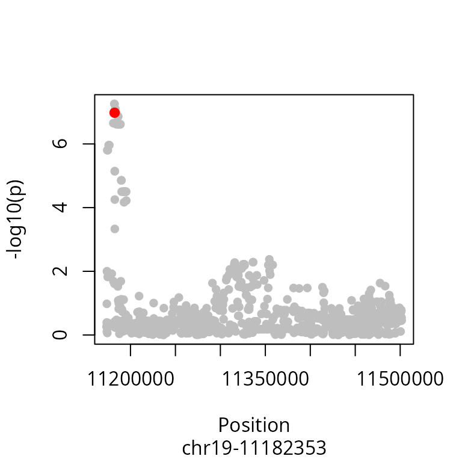

vignettes/FixedPriors_03.Rmd
FixedPriors_03.RmdFixed priors are used when the number of traits and variants to be tested are small.
The default cophescan fixed priors for : pn, pa and pc, provided for
cophe.single and cophe.susie are those derived
from default coloc priors (p1=1e-4, p2=1e-4 and p12=1e-5). The priors
can also be derived from a larger dataset or from the datasets tested in
the cophescan manuscript that match your use case.
This example illustrates the use of cophescan for a small dataset using fixed priors where a hierarchical model cannot be applied.
See the input data vignette for preparing the input for cophscan analysis.
library(cophescan)
data("cophe_multi_trait_data")
attach(cophe_multi_trait_data)
names(cophe_multi_trait_data)
#> [1] "summ_stat" "LD" "querysnpid" "covar_vec"We will check for causal association between a single trait and a query variant using fixed priors.
querytrait <- cophe_multi_trait_data$summ_stat[['Trait_1']]
querysnpid <- cophe_multi_trait_data$querysnpidRegional Manhattan plot showing the position of the query variant in the query trait.
# Additional field named 'position' is required for the Manahattan plot. It is a numeric vector of chromosal positions
querytrait$position <- sapply(querytrait$snp, function(x) as.numeric(unlist(strsplit(x, "-"))[2]))
plot_trait_manhat(querytrait, querysnpid)
Cophescan with fixed priors under a single variant assumption (ABF)
CoPheScan can be run using a single variant assumption (which uses
Approximate Bayes Factors) with the cophe.single
function.
Note:
Case where nsnps in the queried region is very high and pa*(nsnps-1) + pc > 1: In this case please revaluate the supplied priors or run adjust_priors function (see help) which scales down the priors while maintaining the proportion of the supplied priors.
# Run cophescan under a single causal variant assumption by providing the snpid of the known causal variant for trait 1 = querysnpid
res.single <- cophe.single(querytrait, querysnpid = querysnpid, querytrait='Trait_1')
#> [1] "Running cophe.single..."
#> [1] "SNP Priors"
#> pn pa pc
#> 0.80919091 0.00010000 0.09090909
#> [1] "Hypothesis Priors"
#> Hn Ha Hc
#> 0.80919091 0.09990000 0.09090909
#> PP.Hn PP.Ha PP.Hc
#> 5.49e-05 3.06e-02 9.69e-01
#> [1] "PP for causal query variant: 96.9%"
summary(res.single)
#> nsnps PP.Hn PP.Ha PP.Hc lBF.Ha lBF.Hc querysnp
#> 1 1000 5.486139e-05 0.03057925 0.9693659 15.32189 11.96576 chr19-11182353
#> querytrait typeBF
#> 1 Trait_1 ABFWe observe that the posterior probability of causal association for the query variant is 0.969 which indicates that the query trait is causally associated with the query trait.
We can also use the cophe.hyp.predict function to
predict the hypothesis given the posterior probabilities.
res.single.predict <- cophe.hyp.predict(res.single)
#> [1] "Hc.cutoff = 0.6"
#> [1] "Hn.cutoff = 0.2"
(paste0('The predicted hypothesis is: ', res.single.predict$cophe.hyp.call, ' [PP.Hc =', round(res.single.predict$PP.Hc,3), ']' ))
#> [1] "The predicted hypothesis is: Hc [PP.Hc =0.969]"Cophescan with fixed priors using SuSIE Bayes factors
# Run cophescan with susie (multiple variants) by providing the snpid of the known causal variant for trait 1 = querysnpid
querytrait$LD <- LD
res.susie <- cophe.susie(querytrait, querysnpid = querysnpid, querytrait='Trait_1')
#> running max iterations: 100
#> converged: TRUE
#> [1] "SNP Priors"
#> pn pa pc
#> 0.80929091 0.00010000 0.09090909
#> [1] "Hypothesis Priors"
#> Hn Ha Hc
#> 0.80929091 0.09980000 0.09090909
#> [1] "Running cophe.susie..."
#> Using 1000 and 999 available
#> PP.Hn PP.Ha PP.Hc
#> 5.56e-05 3.06e-02 9.69e-01
#> [1] "PP for causal query variant: 96.9%"
summary(res.susie)
#> nsnps hit1 hit2 PP.Hn PP.Ha PP.Hc
#> 1 1000 chr19-11182353 chr19-11182144 5.558347e-05 0.03061269 0.9693317
#> lBF.Ha lBF.Hc querysnp typeBF idx1 idx2 querytrait
#> 1 15.31003 11.95277 chr19-11182353 susieBF 1 1 Trait_1We get a similar result using SuSIE cophe.susie. We
recommend the use of cophe.susie whenever LD information is
available.
Note: When no credible sets are identified using
cophe.susie cophescan reverts to
cophe.single.